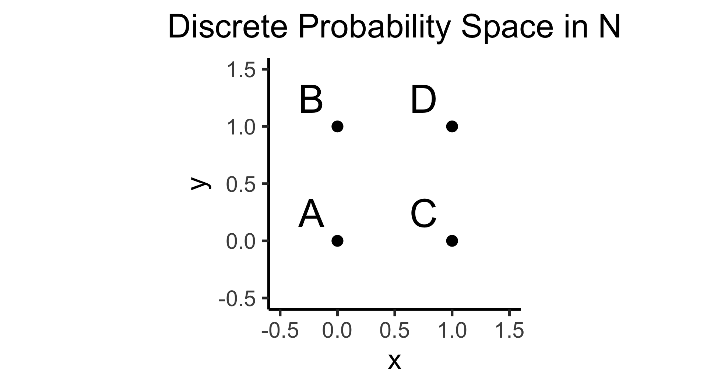
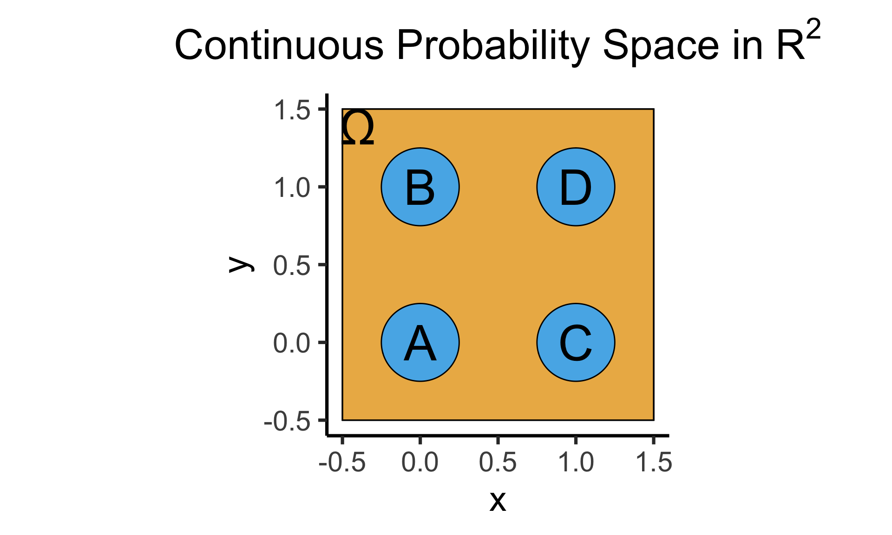
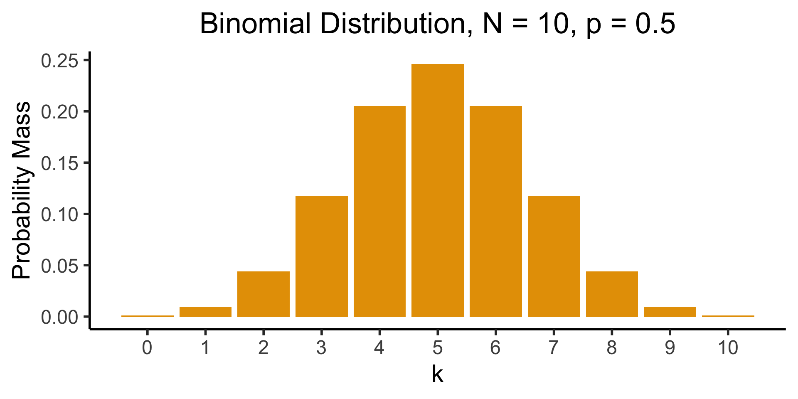

Week 4: Discrete Probability Distributions
DSAN 5100: Probabilistic Modeling and Statistical Computing
Section 03
Jeff Jacobs
2023-09-14
Schedule
| Start | End | Topic | Recording | |
|---|---|---|---|---|
| Lecture | 12:30pm | 12:40pm | Recap and Quizzes → | |
| 12:40pm | 1:20pm | Probability Distributions in General → | ||
| 1:20pm | 2:00pm | Common Discrete Distributions → | ||
| Break! | 2:00pm | 2:10pm | ||
| Lab | 2:10pm | 2:50pm | Lab 3 Demonstration | |
| 2:50pm | 3:00pm | Lab 3 Assignment Overview |
Probability Distributions in General
Discrete vs. Continuous
- Discrete = “Easy mode”: Based (intuitively) on sets
- \(\Pr(A)\): Four marbles \(\{A, B, C, D\}\) in box, all equally likely, what is the probability I pull out \(A\)?
\[ \Pr(A) = \underbrace{\frac{|\{A\}|}{|\Omega|}}_{\mathclap{\small \text{Probability }\textbf{mass}}} = \frac{1}{|\{A,B,C,D\}|} = \frac{1}{4} \]
- Continuous = “Hard mode”: Based (intuitively) on areas
- \(\Pr(A)\): If I throw a dart at this square, what is the probability that I hit region \(A\)?

\[ \Pr(A) = \underbrace{\frac{\text{Area}(\{A\})}{\text{Area}(\Omega)}}_{\mathclap{\small \text{Probability }\textbf{density}}} = \frac{\pi r^2}{s^2} = \frac{\pi \left(\frac{1}{4}\right)^2}{4} = \frac{\pi}{64} \]
The Technical Difference tl;dr
- Countable Sets: Can be put into 1-to-1 correspondence with the natural numbers \(\mathbb{N}\)
- What are you doing when you’re counting? Saying “first”, “second”, “third”, …
- You’re pairing each object with a natural number! \(\{(\texttt{a},1),(\texttt{b},2),\ldots,(\texttt{z},26)\}\)
- Uncountable Sets: Cannot be put into 1-to-1 correspondence with the natural numbers.
- \(\mathbb{R}\) is uncountable. Intuition: Try counting the real numbers. Proof1 \[ \text{Assume }\exists (f: \mathbb{R} \leftrightarrow \mathbb{N}) = \begin{array}{|c|c|c|c|c|c|c|}\hline \mathbb{R} & & & & & & \Leftrightarrow \mathbb{N} \\ \hline \color{orange}{3} & . & 1 & 4 & 1 & \cdots & \Leftrightarrow 1 \\\hline 4 & . & \color{orange}{9} & 9 & 9 & \cdots & \Leftrightarrow 2 \\\hline 0 & . & 1 & \color{orange}{2} & 3 & \cdots &\Leftrightarrow 3 \\\hline 1 & . & 2 & 3 & \color{orange}{4} & \cdots & \Leftrightarrow 4 \\\hline \vdots & \vdots & \vdots & \vdots & \vdots & \ddots & \vdots \\\hline \end{array} \overset{\color{blue}{y_{[i]}} = \color{orange}{x_{[i]}} \overset{\mathbb{Z}_{10}}{+} 1}{\longrightarrow} \color{blue}{y = 4.035 \ldots} \Leftrightarrow \; ? \]
The Practical Difference
- This part of the course (discrete probability): \(\Pr(X = v), v \in \mathcal{R}_X \subseteq \mathbb{N}\)
- Example: \(\Pr(\)\() = \Pr(X = 3), 3 \in \{1,2,3,4,5,6\} \subseteq \mathbb{N}\)
- Next part of the course (continuous probability): \(\Pr(X \in V), v \subseteq \mathbb{R}\)
- Example: \(\Pr(X \geq 2\pi) = \Pr(X \in [\pi,\infty)), [\pi,\infty) \subseteq \mathbb{R}\)
- Why do they have to be in separate parts?
\[ \Pr(X = 2\pi) = \frac{\text{Area}(\overbrace{2\pi}^{\mathclap{\small \text{Single point}}})}{\text{Area}(\underbrace{\mathbb{R}}_{\mathclap{\small \text{(Uncountably) Infinite set of points}}})} = 0 \]
Probability Mass vs. Probability Density
- Cumulative Distribution Function (CDF): \(F_X(v) = \Pr(X \leq v)\)
- For discrete RV \(X\), Probability Mass Function (pmf) \(p_X(v)\): \[ \begin{align*} p_X(v) &= \Pr(X = v) = F_X(v) - F_X(v-1) \\ \implies F_X(v) &= \sum_{\{w \in \mathcal{R}_X: \; w \leq v\}}p_X(w) \end{align*} \]
- For continuous RV \(X\) (\(\mathcal{R}_X \subseteq \mathbb{R}\)), Probability Density Function (pdf) \(f_X(v)\): \[ \begin{align*} f_X(v) &= \frac{d}{dx}F_X(v) \\ \implies F_X(v) &= \int_{-\infty}^v f_X(w)dw \end{align*} \]
Probability Density \(\neq\) Probability
- BEWARE: \(f_X(v) \neq \Pr(X = v)\)!
- Long story short, for continuous variables, \(\Pr(X = v) = 0\)1
- Hence, we instead construct a PDF \(f_X(v)\) that enables us to calculate \(\Pr(X \in [a,b])\) by integrating: \(f_X(v)\) is whatever function satisfies \(\Pr(X \in [a,b]) = \int_{a}^bf_X(v)dv\).
- i.e., instead of \(p_X(v) = \Pr(X = v)\) from discrete world, the relevant function here is \(f_X(v)\), the probability density of \(X\) at \(v\).
- If we really want to get something like the “probability of a value” in a continuous space 😪, we can get something kind of like this by using fancy limits \[ f_X(v) = \lim_{\varepsilon \to 0}\frac{P(X \in [v-\varepsilon, v + \varepsilon])}{2\varepsilon} = \lim_{\varepsilon \to 0}\frac{F(v + \varepsilon) - F(v - \varepsilon)}{2\varepsilon} = \frac{d}{dx}F_X(v) \]
Common Discrete Distributions
- Bernoulli
- Binomial
- Geometric
Bernoulli Distribution
- Single trial with two outcomes, “success” (1) or “failure” (0): basic model of a coin flip (heads = 1, tails = 0)
- \(X \sim \text{Bern}({\color{purple} p}) \implies \mathcal{R}_X = \{0,1\}, \; \Pr(X = 1) = {\color{purple}p}\).
Binomial Distribution
- Number of successes in \({\color{purple}N}\) Bernoulli trials. \(X \sim \text{Binom}({\color{purple}N},{\color{purple}k},{\color{purple}p}) \implies \mathcal{R}_X = \{0, 1, \ldots, N\}\)
- \(P(X = k) = \binom{N}{k}p^k(1-p)^{N-k}\): probability of \(k\) successes out of \(N\) trials.
- \(\binom{N}{k} = \frac{N!}{k!(N-k)!}\): “Binomial coefficient”. How many groups of size \(k\) can be formed?1
Visualizing the Binomial
Multiple Classes: Multinomial Distribution
- Bernoulli only allows two outcomes: success or failure.
- What if we’re predicting soccer match outcomes?
- \(X_i \in \{\text{Win}, \text{Loss}, \text{Draw}\}\)
- Categorical Distribution: Generalization of Bernoulli to \(k\) outcomes. \(X \sim \text{Categorical}(\mathbf{p} = \{p_1, p_2, \ldots, p_k\}), \sum_{i=1}^kp_i = 1\).
- \(P(X = k) = p_k\)
- Multinomial Distribution: Generalization of Binomial to \(k\) outcomes.
- \(\mathbf{X} \sim \text{Multinom}(N,k,\mathbf{p}=\{p_1,p_2,\ldots,p_k\}), \sum_{i=1}^kp_i=1\)
- \(P(\mathbf{X} = \{x_1,x_2\ldots,x_k\}) = \frac{N!}{x_1!x_2!\cdots x_k!}p_1^{x_1}p_2^{x_2}\cdots p_k^{x_k}\)
- \(P(\text{30 wins}, \text{4 losses}, \text{4 draws}) = \frac{38!}{30!4!4!}p_{\text{win}}^{30}p_{\text{lose}}^4p_{\text{draw}}^4\).
Geometric Distribution
- Geometric: Likelihood that we need \({\color{purple}k}\) trials to get our first success. \(X \sim \text{Geom}({\color{purple}k},{\color{purple}p}) \implies \mathcal{R}_X = \{0, 1, \ldots\}\)
- \(P(X = k) = \underbrace{(1-p)^{k-1}}_{\small k - 1\text{ failures}}\cdot \underbrace{p}_{\mathclap{\small \text{success}}}\)
- Probability of \(k-1\) failures followed by a success
Less Common (But Important) Distributions
- Discrete Uniform: \(N\) equally-likely outcomes
- \(X \sim U\{{\color{purple}a},{\color{purple}b}\} \implies \mathcal{R}_X = \{a, a+1, \ldots, b\}, P(X = k) = \frac{1}{{\color{purple}b} - {\color{purple}a} + 1}\)
- Beta: \(X \sim \text{Beta}({\color{purple}\alpha}, {\color{purple}\beta})\): conjugate prior for Bernoulli, Binomial, and Geometric dists.
- Intuition: If we use Beta to encode our prior hypothesis, then observe data drawn from Binomial, distribution of our updated hypothesis is still Beta.
- \(\underbrace{\Pr(\text{biased}) = \Pr(\text{unbiased})}_{\text{Prior: }\text{Beta}({\color{purple}\alpha}, {\color{purple}\beta})} \rightarrow\) Observe \(\underbrace{\frac{8}{10}\text{ heads}}_{\text{Data}} \rightarrow \underbrace{\Pr(\text{biased}) = 0.65}_{\text{Posterior: }\text{Beta}({\color{purple}\alpha + 8}, {\color{purple}\beta + 2})}\)
- Dirichlet: \(\mathbf{X} = (X_1, X_2, \ldots, X_K) \sim \text{Dir}({\color{purple} \boldsymbol\alpha})\)
- \(K\)-dimensional extension of Beta (thus, conjugate prior for Multinomial)
Interactive Visualizations
Lab 3
Lab 3 Demonstration
Lab 3 Assignment Overview
Appendix: Countability of \(\mathbb{Q}\)
- Bad definition: “\(\mathbb{N}\) is countable because no \(x \in \mathbb{N}\) between \(0\) and \(1\). \(\mathbb{R}\) is uncountable because infinitely-many \(x \in \mathbb{R}\) between \(0\) and \(1\).” (\(\implies \mathbb{Q}\) uncountable)
- And yet, \(\mathbb{Q}\) is countable…

\[ \begin{align*} \begin{array}{ll} s: \mathbb{N} \leftrightarrow \mathbb{Z} & s(n) = (-1)^n \left\lfloor \frac{n+1}{2} \right\rfloor \\ h_+: \mathbb{Z}^+ \leftrightarrow \mathbb{Q}^+ & p_1^{a_1}p_2^{a_2}\cdots \mapsto p_1^{s(a_1)}p_2^{s(a_2)}\cdots \\ h: \mathbb{Z} \leftrightarrow \mathbb{Q} & h(n) = \begin{cases}h_+(n) &n > 0 \\ 0 & n = 0 \\ -h_+(-n) & n < 0\end{cases} \\ (h \circ s): \mathbb{N} \leftrightarrow \mathbb{Q} & ✅🤯 \end{array} \end{align*} \]
DSAN 5100-03 Week 4: Discrete Distributions